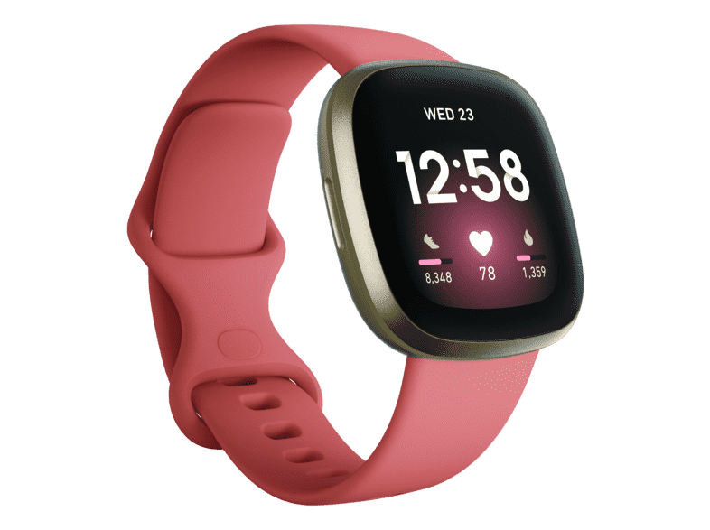

🚛 Livraison gratuite
Modèle Noir
Le modele noir à la particularité de contenir des grains noir provenant de la lune ce qui fait de cette montre la plus chere d'ou la rareté du matériaux.
Modèle Beige

Le modèle beige lui contient directement la poussière blanche de la lune.
Modèle Rose
Le modèle rose, en rapport avec la lune rose désignant la première lune du primtemps, est une édition spéciale et rare pouvant se recharger au soleil.